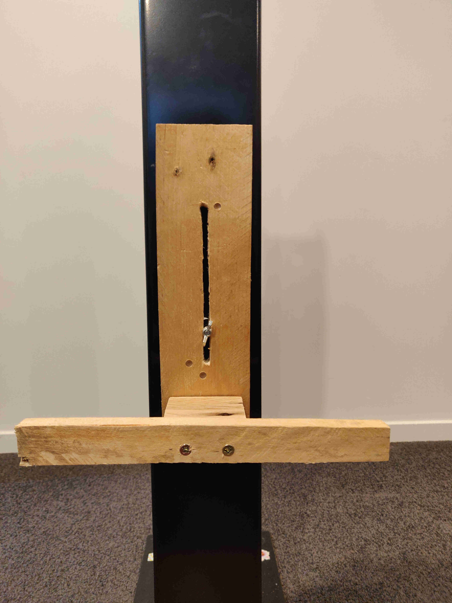
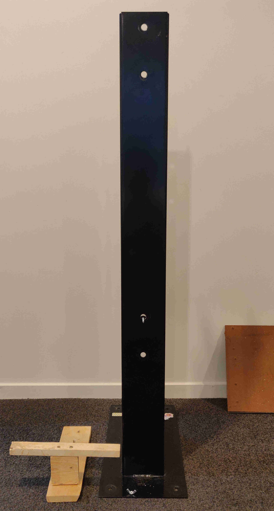
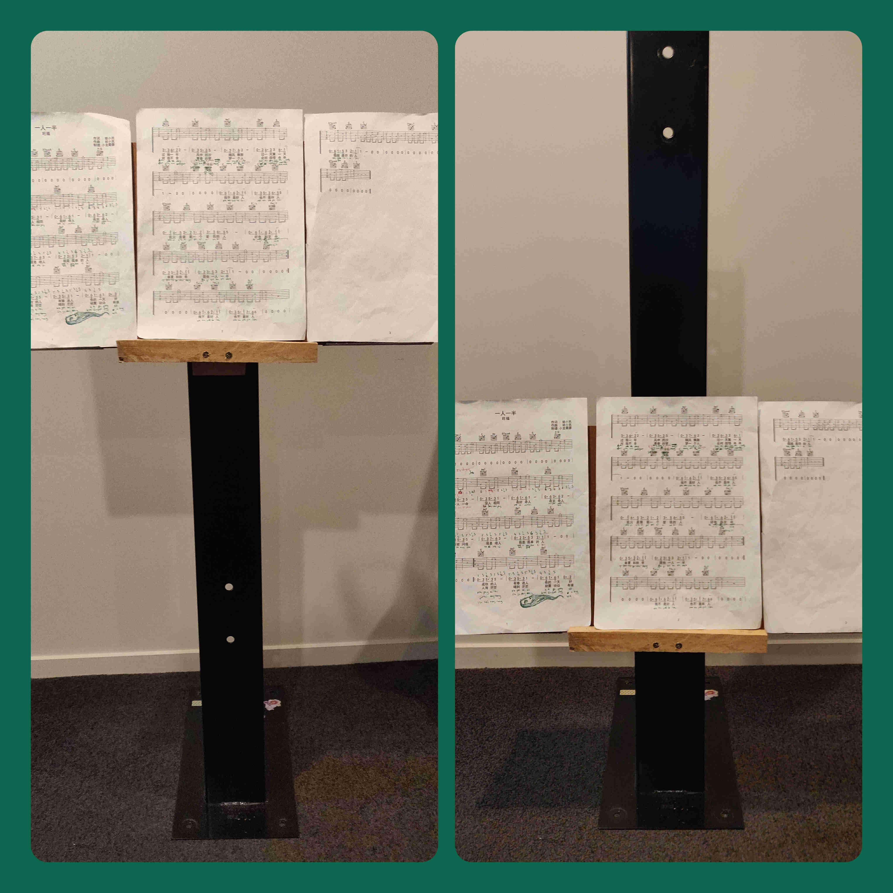
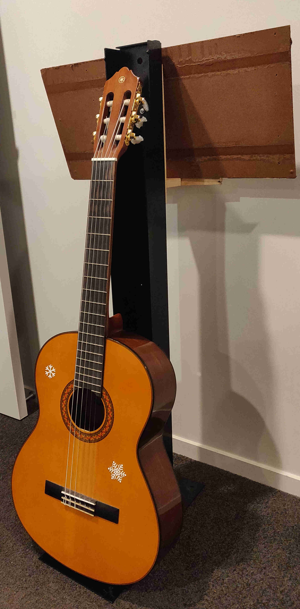

Music Stand
My wife and I have been learning guitar for almost a year now. I have wanted to learn to play guitar for a very long time now, but I did not learn any instruments when I was young, and so I thought I had missed the chance. Then at the start of 2022, I saw a second hand guitar for sale and thought about buying it. When I told my wife, she said that she had just started thinking to learn guitar as she had a friend in China who teaches guitar. So, we bought some guitars and signed up to learn online via Zoom!
Now after almost a year, we decided we needed stands to hold our sheets with the guitar chords. Also, for a few months now, my wife has been telling me to remove a art station I had made (unfortunately I did not take photos of that stand). That art station was made from a pallet with metal standing frame that was from transporting a Microsoft Surface Hub. I was able to take this home from work, and I modified it to hold a large roll of paper with a flat vertical board so that my daughter could paint or draw on the paper, and then I would rip it off and pull down another sheet ready for her to start again. Some of these paintings and drawings were then used as wrapping paper.
As my daughter was not really using the art station much anymore, I gave in and took the stand apart. Removing the boards from the stand left the large pallet at the bottom, along with two metal stands. I have now turned the two metal stands into two music sheet holders. I grabbed some pallet wood offcuts and started making a holder that I could bolt to the stand via some existing holes on the stands. Then when I described to my wife what I was going to build, she said she would like it to be adjustable to seating at different heights. After thinking for some minutes, I came up with a minor modification to my original design.
The mechanism consists of three bits of wood: panel to attach to the metal frame with slide adjustment, protruding piece to allow the board (for the sheets of paper to lay on) to be angled, and the final piece to stop the board from sliding off. In order to be height adjustable, I had to cut a slot in the main panel to fit a bolt through with a wingnut for easy adjustment.

The metal frame also has 4 existing holes so that the panel can be attached via any of these holes for the major height adjustment. Minor height adjustment is made via the wingnuts and slot in the panel piece.

The next images shows the stand at high position for seated at a dining chair, or low position for seated on a short stool.

It also turns out that the back of the metal frame can be used to hold the guitar, though not very well. I am thinking of how to make this better.

This page has been read … times.